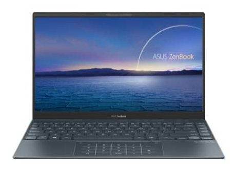
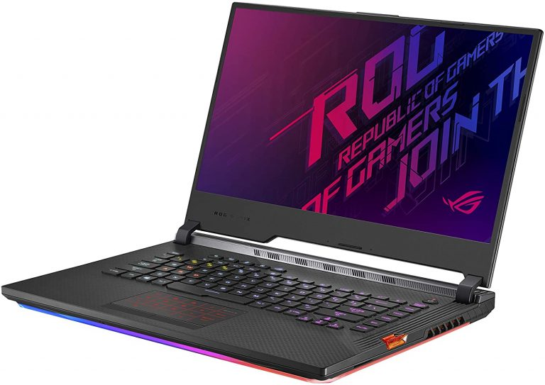

SFESIFIKASI LAPTOP ASUS
BERIKUT ADALAH SFESIFIKASI LAPTOP ASUS

CPU: Intel Core i7-1165G7
GPU: Grafis Intel Iris Xe
RAM: 16 GB
Penyimpanan: 1TB M.2 PCI 3.0 SSD
Layar: 13,3 inci, 1920 x 1080
Ukuran: 11,9 x 8 x 0,5 inci
Berat : 1,1 kg
CPU: Intel Core i3-10110U
GPU: Intel UHD
RAM: 8 GB
Penyimpanan: SSD 128GB
Layar: 14 inci, 1080p
Ukuran: 12,6 x 8,1 x 0,5 inci
Berat : 1,1 kg

CPU : Intel Core i7-9750H
GPU : Nvidia GeForce GTX 2060
RAM : 16 GB
Penyimpanan : 1TB SSD
Layar : 15,6 inci 1080p
Ukuran : 14,2 x 10,8 x 1 inci
Berat : 2 kg
Harga : Rp 20 jutaan
Back